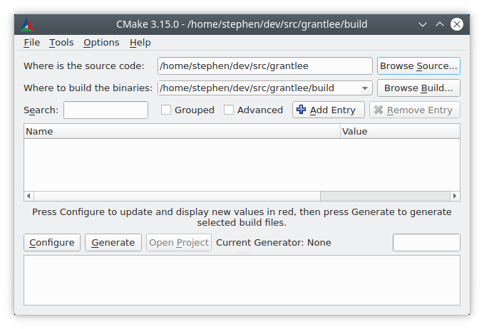
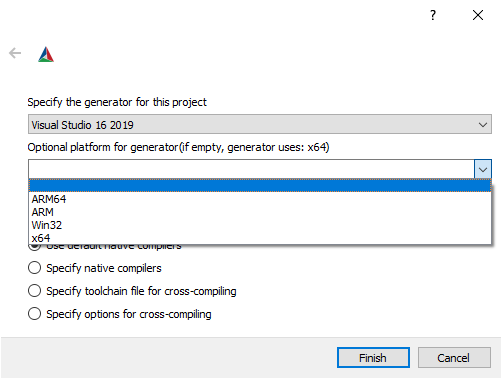
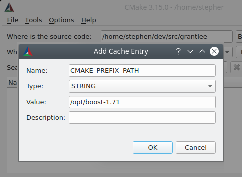

Когда программное обеспечение предоставляет систему сборки на основе CMake вместе с исходным кодом, пользователь должен использовать инструмент взаимодействия с CMake для его сборки.
Правильно настроенные системы сборки на основе CMake не создают никаких выходных данных в каталоге исходного кода, поэтому пользователь обычно выполняет сборку за пределами исходного каталога. Сначала CMake должен быть настроен на генерацию подходящей системы сборки, а затем пользователь вызывает инструмент сборки для обработки сгенерированной системы сборки. Сгенерированная система сборки специфична для машины, на которой она была создана, и не подлежит распространению. Каждый пользователь исходного программного пакета должен использовать CMake для генерации системы сборки, специфичной для его системы.
Сгенерированные системы сборки, как правило, следует считать только для чтения. Файлы CMake как основные артефакты должны полностью определять систему сборки, и не должно быть необходимости вручную заполнять свойства, например, в IDE после генерации системы сборки. CMake периодически перезаписывает сгенерированную систему сборки, поэтому изменения, внесенные пользователями, будут перезаписаны.
Описанные в данном руководстве функции и пользовательские интерфейсы доступны для всех систем сборки на основе CMake благодаря предоставлению файлов CMake.
Инструменты CMake могут сообщать об ошибках пользователю при обработке предоставленных файлов CMake, таких как сообщение о том, что компилятор не поддерживается или компилятор не поддерживает необходимую опцию компиляции, или зависимость не может быть найдена. Эти ошибки должны быть устранены пользователем путем выбора другого компилятора, установки зависимостей или указания CMake, где их найти и т.д.
Простой, но типичный пример использования cmake(1) с новой копией исходного кода программного обеспечения - это создание каталога сборки и вызов cmake в нем:
$ cd some_software-1.4.2
$ mkdir build
$ cd build
$ cmake .. -DCMAKE_INSTALL_PREFIX=/opt/the/prefix
$ cmake --build .
$ cmake --build . --target installРекомендуется выполнять сборку в отдельном каталоге от исходного, так как это сохраняет исходный каталог нетронутым, позволяет выполнять сборку с использованием нескольких цепочек инструментов и позволяет легко очистить артефакты сборки, просто удалив каталог сборки.
Инструменты CMake могут сообщать предупреждения, предназначенные для разработчиков программного обеспечения, а не для пользователей. Такие предупреждения заканчиваются фразой "Это предупреждение для разработчиков проекта". Пользователи могут отключить такие предупреждения, передав флаг -Wno-dev команде cmake(1).
Пользователи, предпочитающие интерфейсы на основе графического интерфейса, могут использовать инструмент cmake-gui для вызова CMake и генерации системы сборки.
Сначала необходимо заполнить каталоги исходного кода и двоичных файлов. Всегда рекомендуется использовать разные каталоги для исходного кода и сборки.
Существует несколько инструментов пользовательского интерфейса, которые могут быть использованы для генерации системы сборки из файлов CMake. Инструменты ccmake и cmake-gui помогают пользователю настроить различные необходимые опции. Инструмент cmake может быть вызван для указания опций через командную строку. В данном руководстве описаны опции, которые можно установить с помощью любого из пользовательских интерфейсов, хотя способ установки опции различен для каждого инструмента.
При вызове cmake с использованием системы сборки командной строки, такой как Makefiles или Ninja, необходимо использовать правильную среду сборки, чтобы убедиться, что инструменты сборки доступны. CMake должен иметь возможность найти соответствующий инструмент сборки, компилятор, компоновщик и другие необходимые инструменты.
В системах Linux соответствующие инструменты часто предоставляются в системных каталогах и могут быть легко установлены через системный менеджер пакетов. Другие цепочки инструментов, предоставляемые пользователем или установленные в нестандартных каталогах, также могут быть использованы.
При кросс-компиляции некоторые платформы могут требовать установки переменных окружения или предоставлять скрипты для их настройки.
Visual Studio поставляется с несколькими командными оболочками и скриптами
vcvarsall.bat для настройки правильной среды для систем сборки командной строки. Хотя
не обязательно использовать соответствующую среду командной строки при использовании генератора
Visual Studio, это не имеет недостатков.
При использовании Xcode может быть установлено несколько версий Xcode. Выбор версии можно осуществить несколькими способами:
xcode-select.
DEVELOPER_DIR
при запуске CMake и инструмента сборки.Для удобства cmake-gui(1) предоставляет редактор переменных окружения.
CMake выбирает генератор по умолчанию в зависимости от платформы. Обычно генератор по умолчанию достаточен, чтобы позволить пользователю приступить к сборке программного обеспечения.
Пользователь может переопределить генератор по умолчанию с помощью опции -G:
cmake .. -G Ninja
Вывод cmake --help включает список генераторов, доступных для выбора пользователем.
Обратите внимание, что названия генераторов чувствительны к регистру.
В Unix-подобных системах (включая Mac OS X) по умолчанию используется генератор Unix Makefiles.
Вариант этого генератора также может быть использован на Windows в различных средах, таких как NMake
Makefiles и MinGW Makefiles. Эти генераторы создают вариант Makefile, который может быть выполнен с
помощью make, gmake, nmake или аналогичных инструментов.
Подробности о целевых средах и инструментах см. в документации по отдельным генераторам.
Генератор Ninja доступен на всех основных платформах. ninja — это инструмент сборки,
аналогичный make, но с упором на производительность и эффективность.
На Windows cmake(1) может использоваться для генерации решений для IDE Visual Studio.
Версии Visual Studio могут быть указаны по названию продукта IDE, которое включает четырехзначный
год. Предусмотрены псевдонимы для других способов, которыми иногда называются версии Visual Studio,
такие как двухзначные цифры, соответствующие версии продукта VisualC++, или их комбинация:
cmake .. -G "Visual Studio 2019"cmake .. -G "Visual Studio 16"cmake .. -G "Visual Studio 16 2019"
Генераторы Visual Studio могут ориентироваться на разные архитектуры. Можно указать целевую
архитектуру с помощью опции -A:
cmake .. -G "Visual Studio 2019" -A x64cmake .. -G "Visual Studio 16" -A ARMcmake .. -G "Visual Studio 16 2019" -A ARM64На Apple можно использовать генератор Xcode для создания файлов проектов для IDE Xcode.
Некоторые IDE, такие как KDevelop4, QtCreator и CLion, имеют встроенную поддержку систем сборки на основе CMake. Эти IDE предоставляют интерфейс для выбора используемого генератора, обычно между генератором на основе Makefile или Ninja.
Обратите внимание, что невозможно изменить генератор с помощью -G после первого вызова
CMake. Для изменения генератора необходимо удалить каталог сборки и начать сборку с нуля.
При генерации файлов проектов и решений Visual Studio доступны несколько других опций для
использования при первоначальном запуске cmake(1).
Инструментарий Visual Studio можно указать с помощью опции cmake -T:
# Сборка с использованием инструментов clang-cl
cmake.exe .. -G "Visual Studio 16 2019" -A x64 -T ClangCL# Сборка с целевым назначением Windows XP
cmake.exe .. -G "Visual Studio 16 2019" -A x64 -T v120_xp
В то время как опция -A указывает целевую архитектуру, опция -T может быть
использована для указания деталей используемой цепочки инструментов. Например, можно передать
-Thost=x64, чтобы выбрать 64-разрядную версию инструментов хоста. Следующий пример
демонстрирует, как использовать 64-битные инструменты и также собирать для целевой архитектуры
64-бита:
cmake .. -G "Visual Studio 16 2019" -A x64 -Thost=x64Кнопка «Configure» открывает новое диалоговое окно для выбора генератора CMake.
Все генераторы, доступные в командной строке, также доступны в cmake-gui(1).
При выборе генератора Visual Studio доступны дополнительные параметры для установки целевой архитектуры.
Программные проекты часто требуют установки переменных через командную строку при вызове CMake. Некоторые из наиболее часто используемых переменных CMake перечислены в таблице ниже:
| Переменная | Значение |
|---|---|
CMAKE_PREFIX_PATH |
Путь для поиска зависимых пакетов |
CMAKE_MODULE_PATH |
Путь для поиска дополнительных модулей CMake |
CMAKE_BUILD_TYPE |
Конфигурация сборки, такая как Debug или Release, определяющая флаги отладки/оптимизации. Это имеет значение только для одноконфигурационных систем сборки, таких как Makefile и Ninja. Многоконфигурационные системы сборки, такие как Visual Studio и Xcode, игнорируют эту настройку. |
CMAKE_INSTALL_PREFIX |
Место для установки программного обеспечения с целью сборки install |
CMAKE_TOOLCHAIN_FILE |
Файл, содержащий данные для кросс-компиляции, такие как наборы инструментов и sysroots. |
BUILD_SHARED_LIBS |
Флаг для сборки общих библиотек вместо статических для команд add_library(), используемых без указания типа. |
CMAKE_EXPORT_COMPILE_COMMANDS |
Генерация файла compile_commands.json для использования с инструментами на основе clang |
Могут быть доступны и другие переменные, специфичные для проекта, для управления сборкой, такие как включение или отключение компонентов проекта.
В CMake нет стандарта именования таких переменных между различными системами сборки, кроме того, что переменные с префиксом CMAKE_ обычно относятся к параметрам, предоставляемым самим CMake, и не должны использоваться в сторонних параметрах, которые должны использовать собственный префикс. Инструмент cmake-gui(1) может отображать параметры в группах, определенных их префиксом, поэтому имеет смысл для сторонних разработчиков использовать согласованный префикс.
Переменные CMake могут быть установлены в командной строке как при создании первоначальной сборки:
mkdir build
cd build
cmake .. -G Ninja -DCMAKE_BUILD_TYPE=Debugтак и позже при последующем вызове cmake(1):
cd build
cmake . -DCMAKE_BUILD_TYPE=DebugФлаг -U может быть использован для сброса переменных в командной строке cmake(1):
cd build
cmake . -UMyPackage_DIRСистема сборки CMake, которая была первоначально создана в командной строке, может быть изменена с использованием cmake-gui(1) и наоборот.
Инструмент cmake(1) позволяет указать файл для использования при заполнении начального кэша с помощью опции -C. Это может быть полезно для упрощения команд и скриптов, которые требуют одних и тех же записей кэша несколько раз.
Переменные могут быть установлены в cmake-gui с помощью кнопки "Add Entry". Это вызовет новое диалоговое окно для установки значения переменной.
Основное окно пользовательского интерфейса cmake-gui(1) можно использовать для редактирования существующих переменных.
Когда выполняется CMake, ему необходимо найти расположение компиляторов, инструментов и зависимостей. Также важно, чтобы CMake мог повторно сгенерировать систему сборки с теми же флагами компиляции/линковки и путями к зависимостям. Эти параметры должны быть настроены пользователем, поскольку они специфичны для системы пользователя.
При первом запуске CMake создает файл CMakeCache.txt в каталоге сборки, содержащий пары ключ-значение для таких артефактов. Этот файл кэша можно просматривать или редактировать, запустив инструмент cmake-gui(1) или ccmake(1). Эти инструменты предоставляют интерактивный интерфейс для перенастройки предоставленного программного обеспечения и повторной генерации системы сборки после редактирования значений в кэше. Каждая запись в кэше может иметь связанный с ней краткий текст справки, который отображается в пользовательских интерфейсах инструментов.
Записи кэша также могут иметь тип, указывающий, как они должны отображаться в пользовательском интерфейсе. Например, запись кэша типа BOOL может редактироваться с помощью флажка в пользовательском интерфейсе, STRING можно редактировать в текстовом поле, а FILEPATH, аналогично STRING, также должна предоставлять возможность указать путь к файлу с помощью диалога выбора файла. Запись типа STRING может предоставлять ограниченный список допустимых значений, которые затем отображаются в выпадающем меню в пользовательском интерфейсе cmake-gui(1) (см. свойство кэша STRINGS).
Файлы CMake, поставляемые с программным пакетом, также могут определять булевы параметры с помощью команды option(). Эта команда создает запись в кэше, которая имеет текст справки и значение по умолчанию. Такие записи кэша обычно специфичны для предоставленного программного обеспечения и влияют на конфигурацию сборки, например, будут ли созданы тесты и примеры, будет ли сборка выполнена с включенными исключениями и т.д.
CMake понимает файл CMakePresets.json и его пользовательский аналог CMakeUserPresets.json для сохранения предустановок для часто используемых настроек конфигурации. Эти предустановки могут устанавливать каталог сборки, генератор, переменные кэша, переменные среды и другие параметры командной строки. Все эти параметры могут быть переопределены пользователем. Полные детали формата CMakePresets.json приведены в руководстве cmake-presets(7).
При использовании инструмента командной строки cmake(1) предустановка может быть вызвана с помощью опции --preset. Если указана --preset, генератор и каталог сборки не обязательны, но могут быть указаны для их переопределения. Например, если у вас есть следующий файл CMakePresets.json:
{
"version": 1,
"configurePresets": [
{
"name": "ninja-release",
"binaryDir": "${sourceDir}/build/${presetName}",
"generator": "Ninja",
"cacheVariables": {
"CMAKE_BUILD_TYPE": "Release"
}
}]
}и вы выполните следующее:
cmake -S /path/to/source --preset=ninja-releaseЭто создаст каталог сборки в /path/to/source/build/ninja-release с генератором Ninja и с установленным значением CMAKE_BUILD_TYPE в Release.
Если вы хотите увидеть список доступных предустановок, вы можете выполнить:
cmake -S /path/to/source --list-presetsЭто отобразит предустановки, доступные в /path/to/source/CMakePresets.json и /path/to/source/CMakeUsersPresets.json, без генерации дерева сборки.
Если проект имеет доступные предустановки, либо через CMakePresets.json, либо через CMakeUserPresets.json, список предустановок появится в выпадающем меню в cmake-gui(1) между каталогом исходного кода и каталогом сборки. Выбор предустановки устанавливает каталог сборки, генератор, переменные среды и переменные кэша, но все эти параметры могут быть переопределены после выбора предустановки.
После генерации системы сборки программное обеспечение можно собрать, вызвав соответствующий инструмент сборки. В случае генераторов IDE это может включать загрузку сгенерированного файла проекта в IDE для выполнения сборки.
CMake знает о конкретном инструменте сборки, необходимом для выполнения сборки, поэтому обычно, чтобы собрать систему сборки или проект из командной строки после генерации, можно выполнить следующую команду в каталоге сборки:
cmake --build .Флаг --build включает определенный режим работы для инструмента cmake(1). Он вызывает команду CMAKE_MAKE_PROGRAM, связанную с генератором, или инструмент сборки, настроенный пользователем.
Режим --build также принимает параметр --target для указания конкретной цели для сборки, например, конкретной библиотеки, исполняемого файла или пользовательской цели, или конкретной специальной цели, такой как установка:
cmake --build . --target myexeРежим --build также принимает параметр --config в случае многоконфигурационных генераторов для указания конкретной конфигурации для сборки:
cmake --build . --target myexe --config ReleaseОпция --config не оказывает влияния, если генератор генерирует систему сборки, специфичную для конфигурации, которая выбирается при вызове cmake с переменной CMAKE_BUILD_TYPE.
Некоторые системы сборки опускают детали командных строк, вызванных во время сборки. Флаг --verbose можно использовать для отображения этих командных строк:
cmake --build . --target myexe --verboseРежим --build также может передавать определенные параметры командной строки в основной инструмент сборки, перечисляя их после --. Это может быть полезно для указания параметров инструменту сборки, например, чтобы продолжить сборку после неудачной задачи, где CMake не предоставляет интерфейс высокого уровня.
Для всех генераторов возможно запускать основной инструмент сборки после вызова CMake. Например, make можно выполнить после генерации с помощью генератора Unix Makefiles для запуска сборки, или ninja после генерации с помощью генератора Ninja и т.д. Системы сборки IDE обычно предоставляют командные инструменты для сборки проекта, которые также можно вызвать.
Каждый исполняемый файл и библиотека, описанные в файлах CMake, являются целями сборки, и система сборки может описывать пользовательские цели, как для внутреннего использования, так и для использования пользователем, например, для создания документации.
CMake предоставляет несколько встроенных целей для всех систем сборки, предоставляющих файлы CMake:
EXCLUDE_FROM_ALL или свойства каталога EXCLUDE_FROM_ALL. Имя ALL_BUILD используется для этой цели для генераторов Xcode и Visual Studio.-t clean.install(). См. также Установка программного обеспечения.Для систем на основе Makefile предоставляются варианты бинарных целевых сборок с префиксом /fast. Варианты /fast используются для сборки указанной цели без учета зависимостей. Зависимости не проверяются и не пересобираются, если они устарели. Генератор Ninja достаточно быстр для проверки зависимостей, поэтому такие цели не предоставляются для этого генератора.
Системы на основе Makefile также предоставляют целевые сборки для предварительной обработки, сборки и компиляции отдельных файлов в конкретном каталоге.
$make foo.cpp.i
$make foo.cpp.s
&make foo.cpp.oРасширение файла встроено в имя цели, поскольку другой файл с таким же именем, но с другим расширением может существовать. Тем не менее, предоставляются и целевые сборки без расширения файла.
$make foo.i
$code>$make foo.s
$make foo.oВ системах сборки, содержащих foo.c и foo.cpp, сборка цели foo.i будет предварительно обрабатывать оба файла.
Программа, вызываемая в режиме --build, определяется переменной CMAKE_MAKE_PROGRAM. Для большинства генераторов конкретную программу настраивать не нужно.
| Генератор | Программа сборки по умолчанию | Альтернативы |
|---|---|---|
| XCode | xcodebuild | |
| Unix Makefiles | make | |
| NMake Makefiles | nmake | jom |
| NMake Makefiles JOM | jom | nmake |
| MinGW Makefiles | mingw32-make | |
| MSYS Makefiles | make | |
| Ninja | ninja | |
| Visual Studio | msbuild | |
| Watcom WMake | wmake |
Инструмент jom способен читать makefile'ы в стиле NMake и выполнять сборку параллельно, в то время как инструмент nmake всегда выполняет сборку последовательно. После генерации с помощью генератора NMake Makefiles пользователь может запустить jom вместо nmake. Режим --build также будет использовать jom, если CMAKE_MAKE_PROGRAM был установлен в jom при использовании генератора NMake Makefiles, а для удобства предоставляется генератор NMake Makefiles JOM для поиска jom обычным способом и использования его в качестве CMAKE_MAKE_PROGRAM. Для полноты, nmake является альтернативным инструментом, который может обрабатывать вывод генератора NMake Makefiles JOM, но использование его будет менее эффективно.
Переменная CMAKE_INSTALL_PREFIX может быть установлена в кэше CMake для указания места установки предоставленного программного обеспечения. Если предоставленное программное обеспечение имеет правила установки, указанные с помощью команды install(), они установят артефакты в этот префикс. В Windows место установки по умолчанию соответствует системному каталогу ProgramFiles, который может быть специфичным для архитектуры. На Unix-хостах, по умолчанию, используется каталог /usr/local.
Переменная CMAKE_INSTALL_PREFIX всегда относится к префиксу установки в целевой файловой системе.
В сценариях кросс-компиляции или упаковки, где sysroot является только для чтения или должен оставаться нетронутым, переменная CMAKE_STAGING_PREFIX может быть установлена в место, куда фактически будут установлены файлы.
$cmake .. -DCMAKE_INSTALL_PREFIX=/usr/local \
-DCMAKE_SYSROOT=$HOME/root \
-DCMAKE_STAGING_PREFIX=/tmp/package
$cmake --build .
$cmake --build . --target installРезультатом будут файлы, установленные в такие пути, как /tmp/package/lib/libfoo.so на хост-машине. Местоположение /usr/local на хост-машине не затронуто.
Некоторые предоставленные программные обеспечения могут определять правила удаления, но CMake по умолчанию не генерирует такие правила самостоятельно.
Инструмент ctest(1) поставляется с дистрибутивом CMake для выполнения предоставленных тестов и отчетности результатов. Цель теста test предоставляется для запуска всех доступных тестов, но инструмент ctest(1) позволяет более детально контролировать, какие тесты запускать, как их запускать и как сообщать о результатах. Выполнение ctest(1) в каталоге сборки эквивалентно запуску цели теста:
$ctestРегулярное выражение может быть передано для запуска только тех тестов, которые соответствуют выражению. Чтобы запустить только тесты с Qt в имени:
$ctest -R QtТесты также могут быть исключены с помощью регулярного выражения. Чтобы запустить только тесты без Qt в имени:
$ctest -E QtТесты можно запускать параллельно, передав аргументы -j в ctest(1):
$ctest -R Qt -j8Переменная среды CTEST_PARALLEL_LEVEL может быть установлена альтернативно, чтобы избежать необходимости передавать -j.
По умолчанию ctest(1) не выводит результат тестов. Аргумент командной строки -V (или --verbose) включает режим подробного вывода, чтобы печатать результат всех тестов. Опция --output-on-failure выводит результат тестов только для неудачных тестов. Переменная среды CTEST_OUTPUT_ON_FAILURE может быть установлена в 1 как альтернатива передаче опции --output-on-failure в ctest(1).